Lemon and Raspberry Cupcakes
Lemon and Raspberry cupcakes are not only delicious and moist, they are perfect for parties, gatherings or a gift for someone special. These beautiful treats will make your house glow of summertime, providing everyone lots of smiles and cheer.
Ingredients:
For the cupcakes:
For the icing:
Method:
Step 1: Preheat oven to 180°C and add cupcake liners to a cupcake pan.
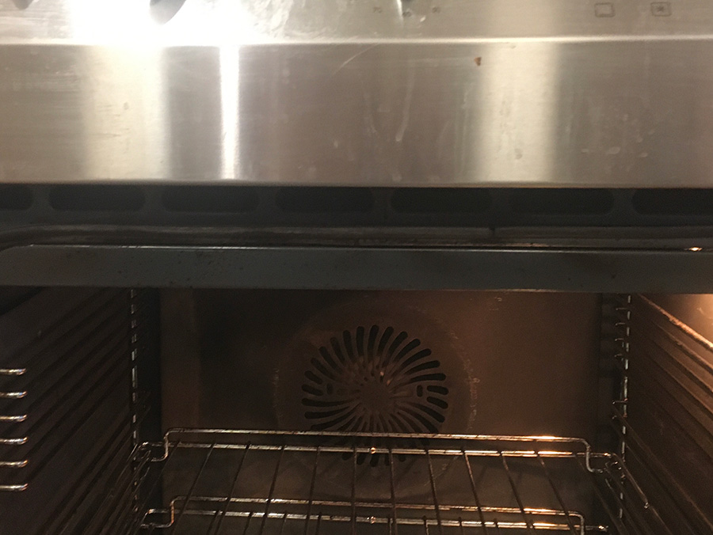
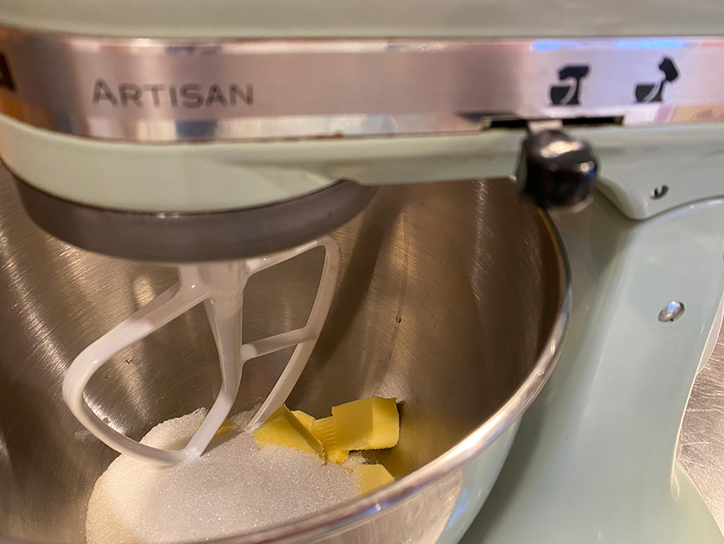
Step 2: Cream the butter and sugar together until light and fluffy, 3-4 minutes.
Step 3: Add the sour cream, vanilla extract and lemon zest and mix until combined.
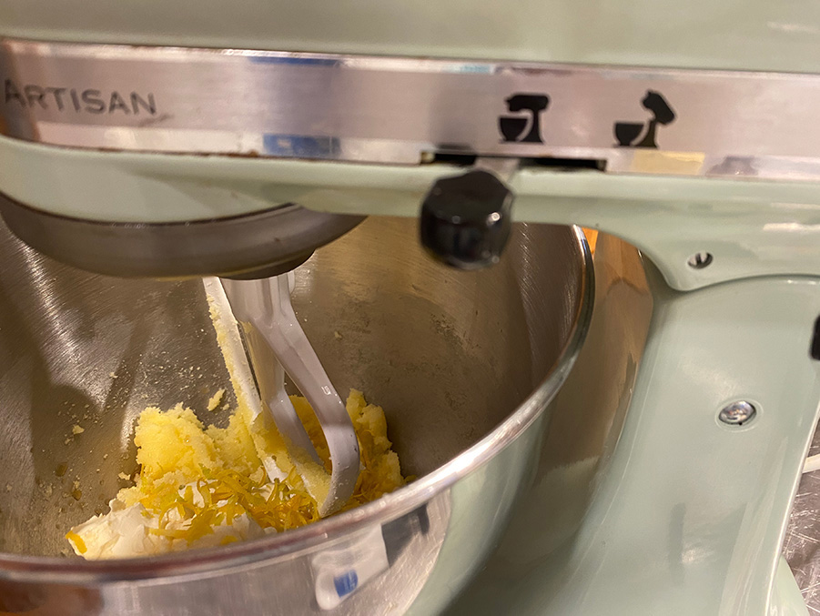
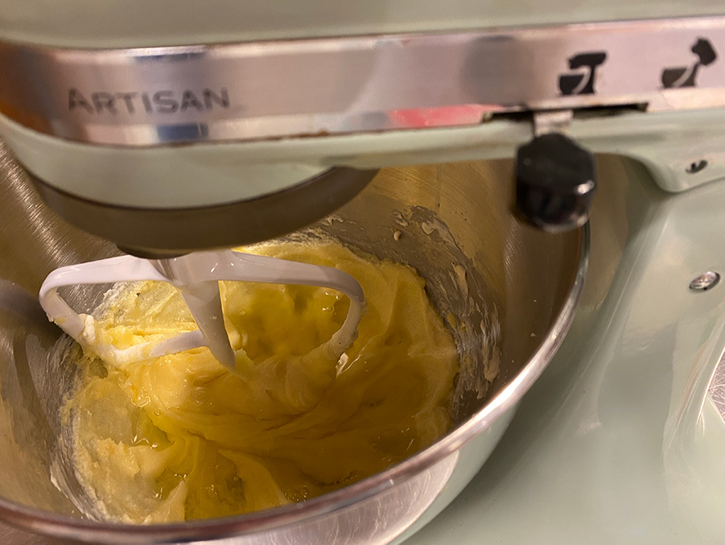
Step 4: Add the egg whites in two batches, mixing until well combined after each. Scrape down the sides of the bowl as needed to make sure all is incorporated and smooth.
Step 5: In a separate bowl, combine the dry ingredients.
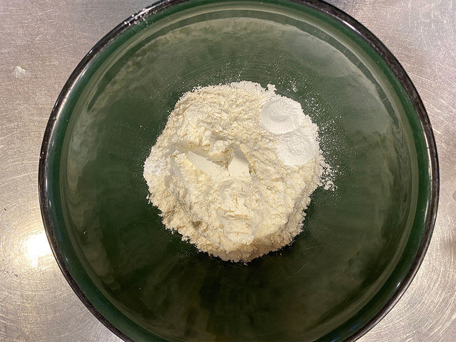
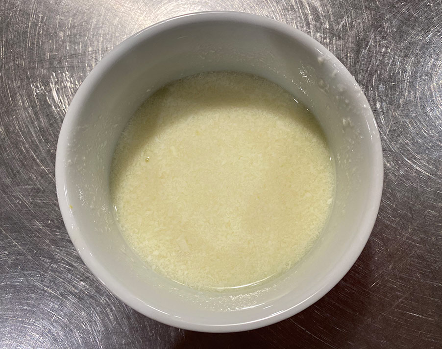
Step 6: In another small bowl or measuring cup, combine the milk, water and lemon juice.
Step 7: Add half of the dry ingredients to the batter and mix until well combined. Add the milk mixture and mix until well combined. Add the remaining dry ingredients and mix until well combined. Scrape down the sides of the bowl as needed to be sure all ingredients are well incorporated.
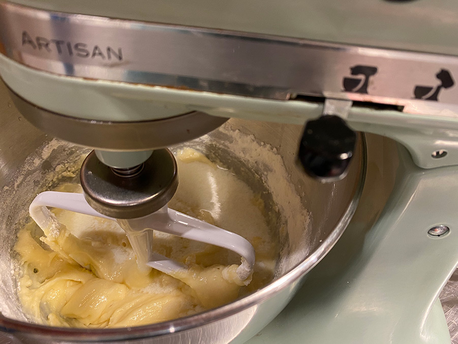
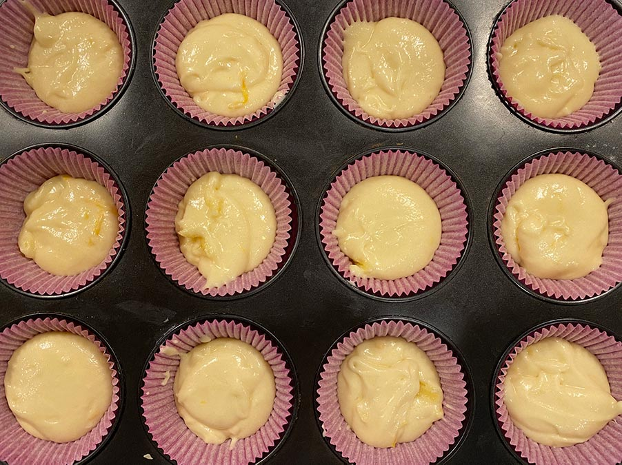
Step 8: Fill cupcake liners about 3/4 full and bake for 15-17 minutes, or until a toothpick inserted comes out with a few crumbs.
Remove the cupcakes from the oven and allow to cool for about 2-3 minutes, then remove to a cooling rack to cool completely.
Step 9: To make the icing, add the raspberries to a food processor (or blender) and puree until smooth.
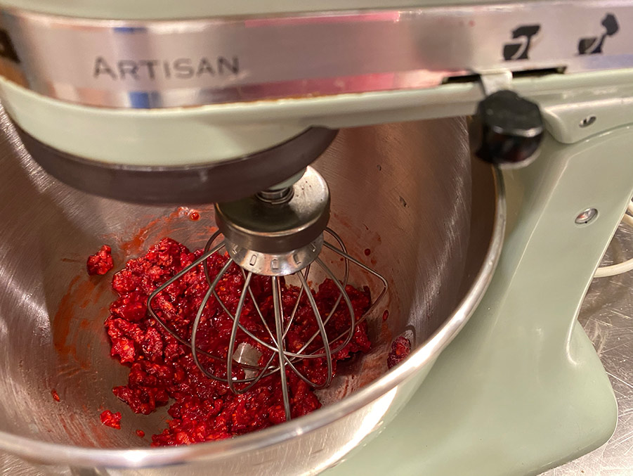
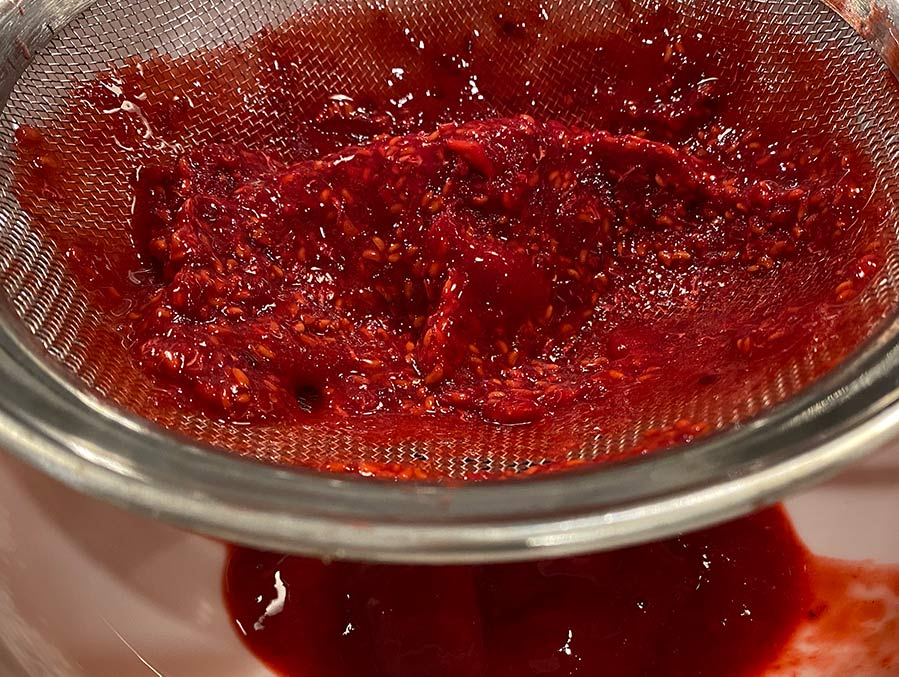
Step 10: Strain the puree through a fine mesh sieve. You’ll end up with about 1/4 cup of puree. Set puree aside.
Step 11: Beat the butter in a large mixer bowl until creamy and smooth.
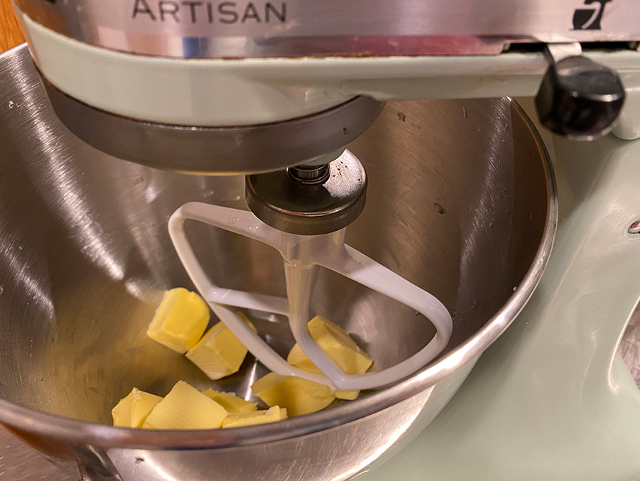
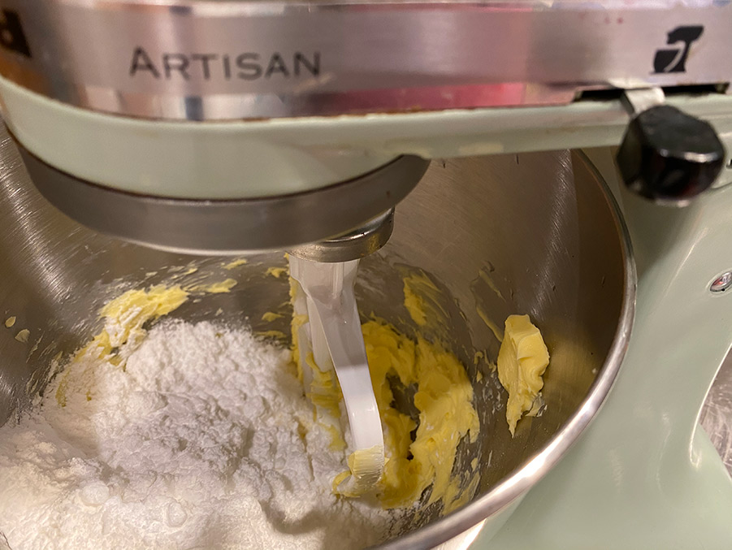
Step 12: Add about half of the powdered sugar and mix until well combined and smooth.
Step 13: Add 2 tablespoons of raspberry puree and mix until well combined.
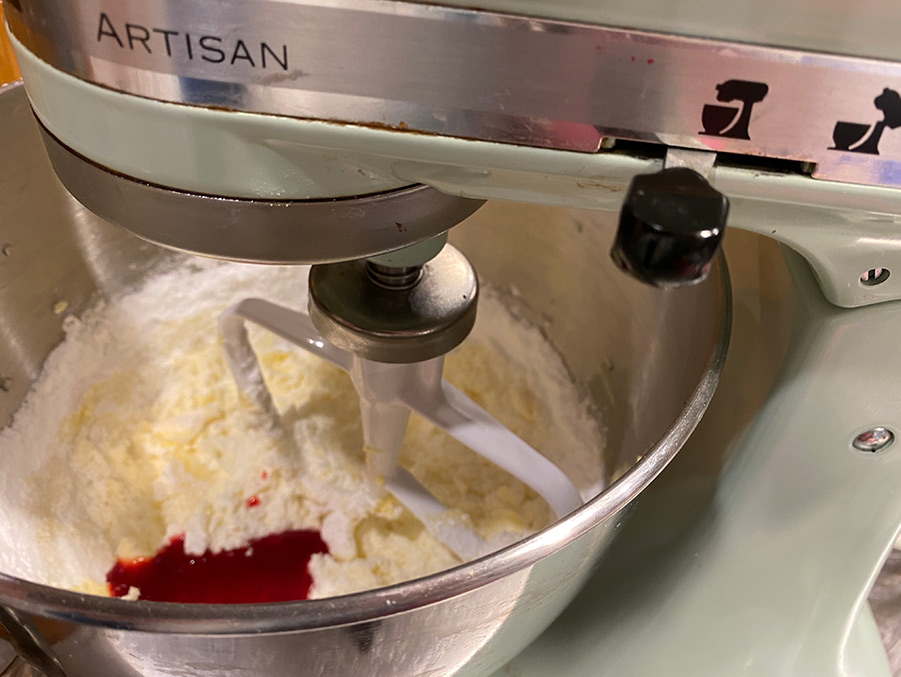

Step 14: Add the remaining raspberry puree as needed to get the right consistency of icing and flavor.
Step 15: Pipe the icing onto the cupcakes.
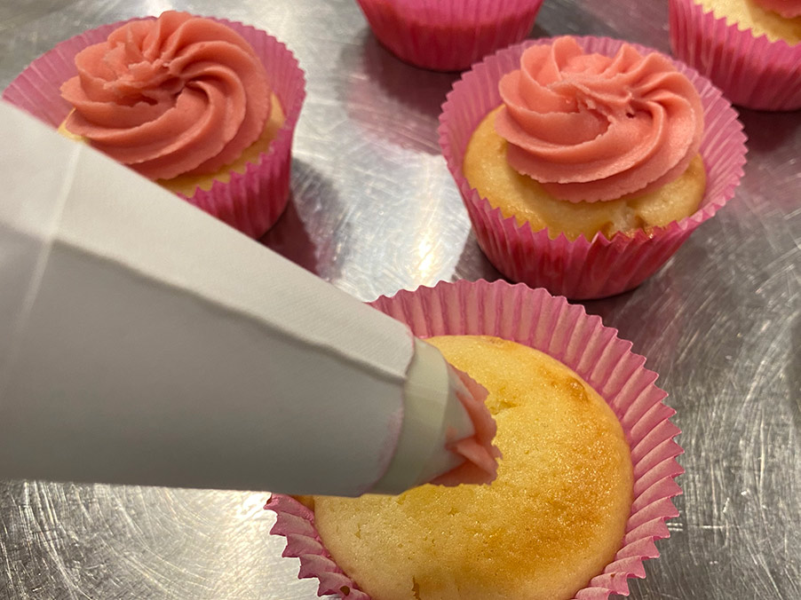
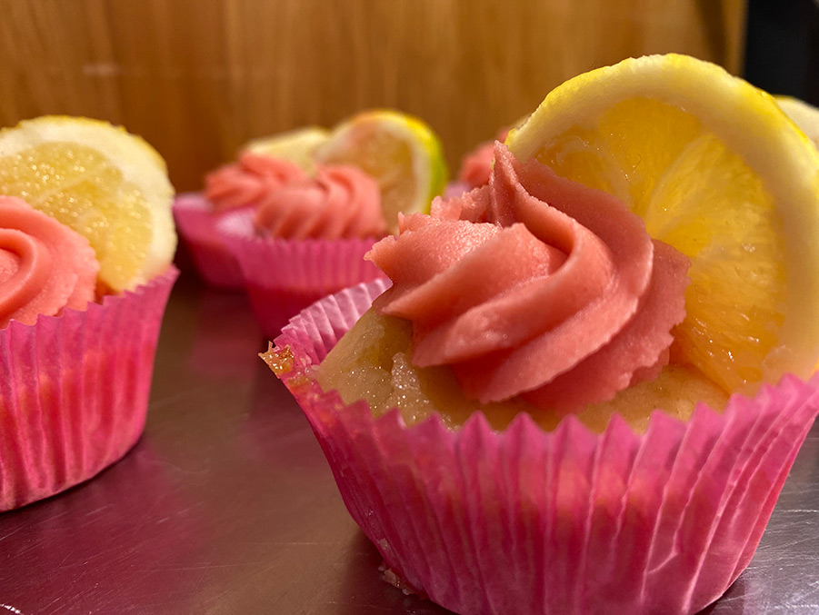
Step 16: Top each cupcake with a lemon slice and raspberry and serve.
Step 1: Preheat oven to 180°C and add cupcake liners to a cupcake pan.
Step 2: Cream the butter and sugar together until light and fluffy, 3-4 minutes.
Step 3: Add the sour cream, vanilla extract and lemon zest and mix until combined.
Step 4: Add the egg whites in two batches, mixing until well combined after each. Scrape down the sides of the bowl as needed to make sure all is incorporated and smooth.
Step 5: In a separate bowl, combine the dry ingredients.
Step 6: In another small bowl or measuring cup, combine the milk, water and lemon juice.
Step 7: Add half of the dry ingredients to the batter and mix until well combined. Add the milk mixture and mix until well combined. Add the remaining dry ingredients and mix until well combined. Scrape down the sides of the bowl as needed to be sure all ingredients are well incorporated.
Step 8: Fill cupcake liners about 3/4 full and bake for 15-17 minutes, or until a toothpick inserted comes out with a few crumbs. Remove the cupcakes from the oven and allow to cool for about 2-3 minutes, then remove to a cooling rack to cool completely.
Step 9: To make the icing, add the raspberries to a food processor (or blender) and puree until smooth.
Step 10: Strain the puree through a fine mesh sieve. You’ll end up with about 1/4 cup of puree. Set puree aside.
Step 11: Beat the butter in a large mixer bowl until creamy and smooth.
Step 12: Add about half of the powdered sugar and mix until well combined and smooth.
Step 13: Add 2 tablespoons of raspberry puree and mix until well combined.
Step 14: Add the remaining raspberry puree as needed to get the right consistency of icing and flavor.
Step 15: Pipe the icing onto the cupcakes.
Step 16: Top each cupcake with a lemon slice and raspberry and serve.